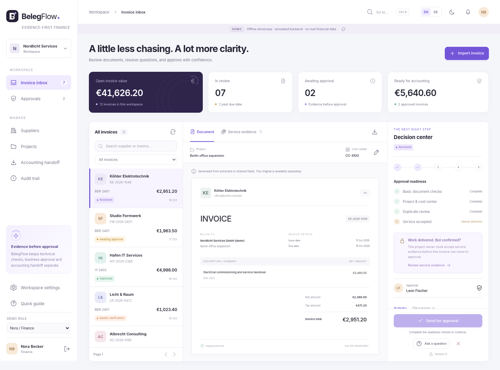

1. Explore
Open the standalone interface with synthetic data. No installation required.
Open showcaseBelegFlow invoice approvals and exception management.
Open the standalone interface with synthetic data. No installation required.
Open showcaseWith Docker installed, run sh scripts/start-demo.sh, or the PowerShell counterpart. Networked dependencies are required.
Read the bilingual user, operations, architecture and release handbooks.
Open handbookTest report · API reference · Code map · Portfolio case study
BelegFlow: Rechnungsfreigabe und nachvollziehbare Klärung.
Die Vorschau mit synthetischen Daten ohne Installation öffnen.
Vorschau öffnenMit Docker sh scripts/start-demo.sh oder das PowerShell-Skript ausführen. Netzwerkzugriff wird benötigt.
Zweisprachige Handbücher zu Benutzung, Betrieb, Architektur und Freigabe.
Handbuch öffnenTestbericht · API · Code · Portfolio
